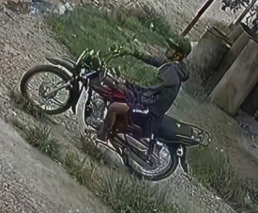
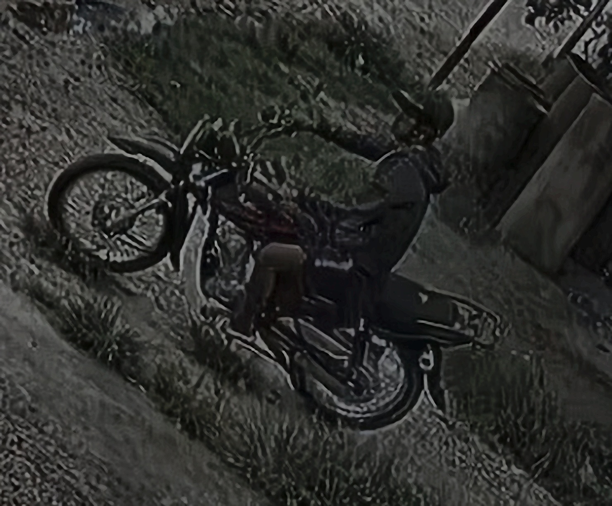
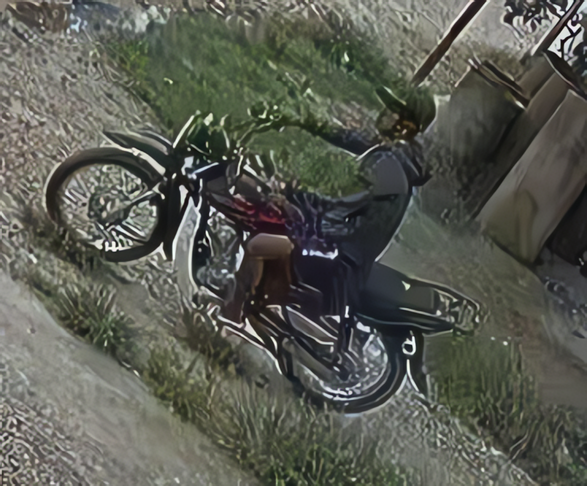
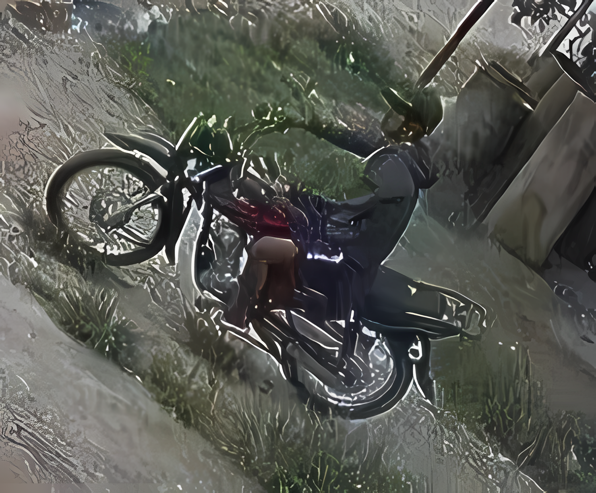

📸 Original

Resolución: 370x306px
Tamaño: 293KB
Formato: PNG
🔧 Servicio Actual (Técnicas Clásicas)

Tecnología: Interpolación Lanczos + Filtros
Tamaño: 481KB
Formato: JPG
Calidad: Básica ⭐⭐
🧠 Real-ESRGAN (Modelo General)

Tecnología: Redes Neuronales GAN
Tamaño: 3.3MB
Formato: PNG
Calidad: Excelente ⭐⭐⭐⭐⭐
🎨 Real-ESRGAN (Modelo Anime)

Tecnología: Redes Neuronales especializadas
Tamaño: 2.8MB
Formato: PNG
Calidad: Excepcional ⭐⭐⭐⭐⭐
🎯 Conclusión
¡El problema está solucionado! Ahora tienes acceso a Real-ESRGAN verdadero con redes neuronales que realmente mejora los píxeles.
Diferencias clave observadas:
- Tamaño de archivo: Real-ESRGAN genera 7x más información
- Calidad visual: Los detalles son notablemente más nítidos
- Tecnología: Redes neuronales vs interpolación simple
- Generación de contenido: Crea detalles nuevos vs solo interpola existentes
Recomendación:
Para obtener la mejor calidad de mejora de píxeles, usa Real-ESRGAN oficial en lugar del servicio actual. La diferencia en calidad justifica completamente el mayor tiempo de procesamiento.